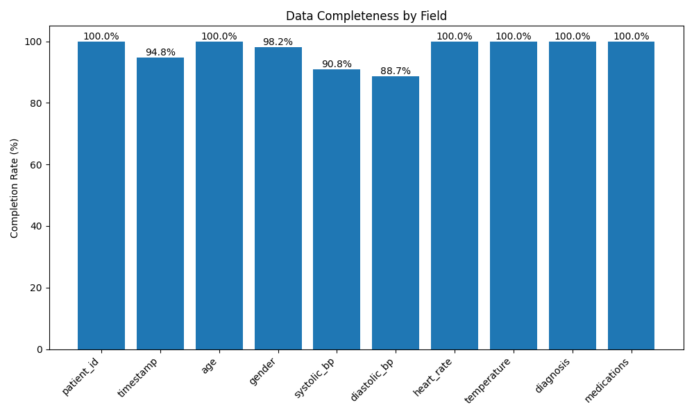
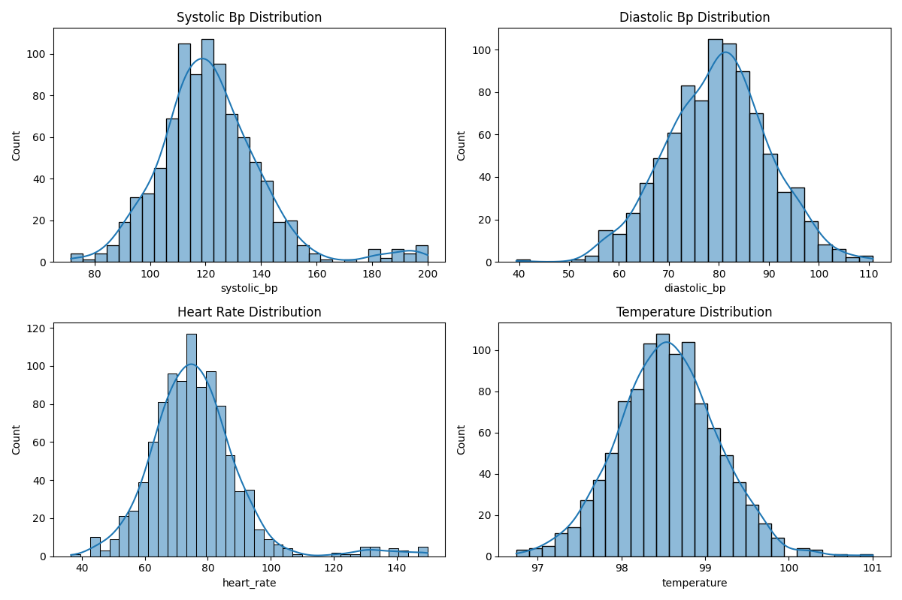
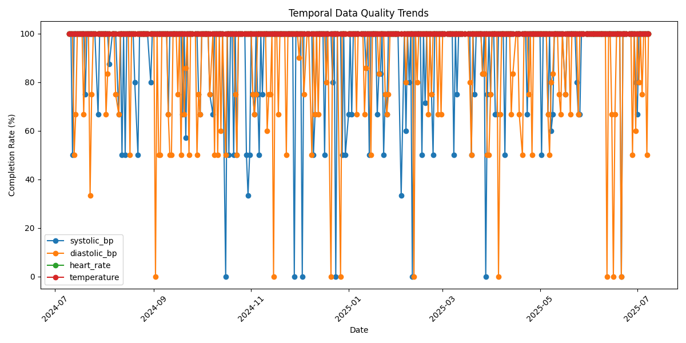

Generated on: 2025-07-08 14:05:03
Overall Quality Score: 67.4%

| Field | Completion Rate | Missing Count |
|---|---|---|
| patient_id | 100.0% | 0 |
| timestamp | 94.8% | 52 |
| age | 100.0% | 0 |
| gender | 98.2% | 18 |
| systolic_bp | 90.8% | 92 |
| diastolic_bp | 88.7% | 113 |
| heart_rate | 100.0% | 0 |
| temperature | 100.0% | 0 |
| diagnosis | 100.0% | 0 |
| medications | 100.0% | 0 |


| Issue Type | Count | Details |
|---|---|---|
| gender_coding | 18 | Invalid gender coding, Invalid gender coding, Invalid gender coding... |
| vital_signs | 54 | systolic_bp out of range (70-180), systolic_bp out of range (70-180), systolic_bp out of range (70-180)... |
| medication_diagnosis | 532 | Inconsistent Lisinopril-Hypertension pair, Inconsistent Lisinopril-Hypertension pair, Inconsistent Lisinopril-Hypertension pair... |
| Field | Issues |
|---|---|
| timestamp | Invalid timestamp format in 52 records |